Dungeon Architect supports non-destructive landscape transformations around the generated dungeon
To see this in action, clone the Landscape transformer sample from the launchpad
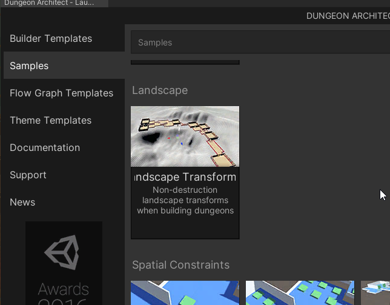
You can build your dungeons on top of an existing landscape that has painted textures and foliage
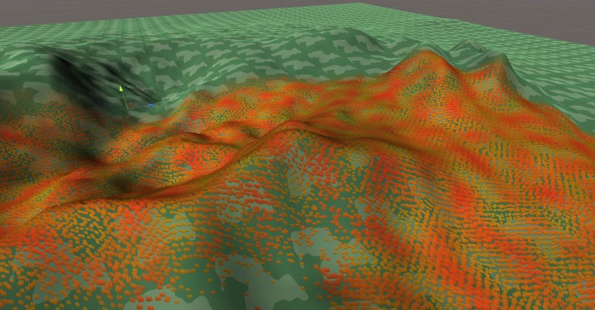
The heightfield, paint and foliage around the dungeon would be modified
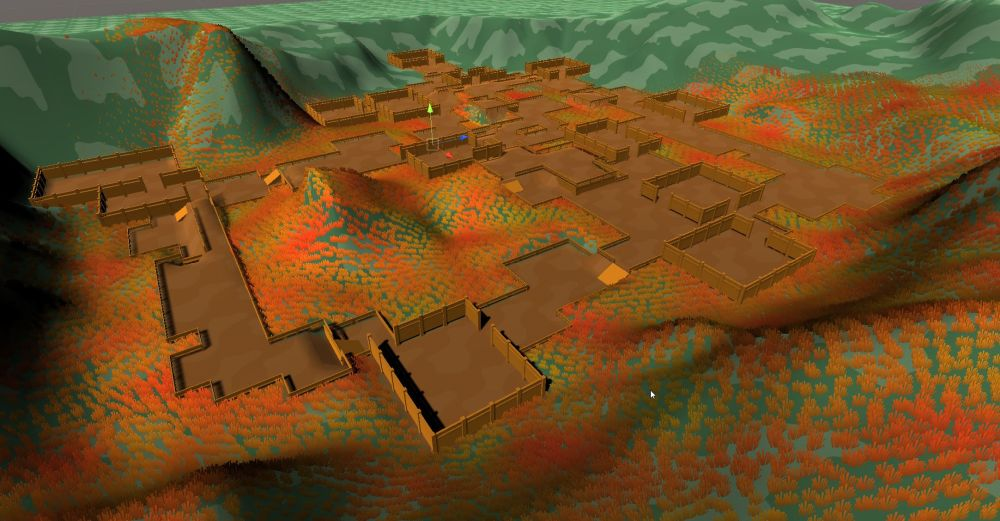
This is non destructive, so when you destroy your dungeon, the original landscape data (height, paint, foliage etc) in that area is restored
Right now, the Grid Builder and City builder support landscape transformations
Setup Landscape Transformer
To add support for landscape transformations, perform the following,
Move your dungeon game object to the location where you'd like to build your dungeon
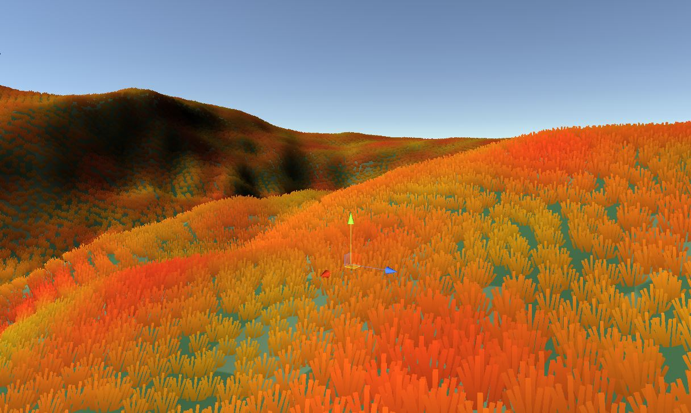
Add the LandscapeTransformerGrid or the LandscapeTransformerCity component to your dungeon game object, depending on the builder
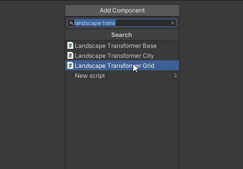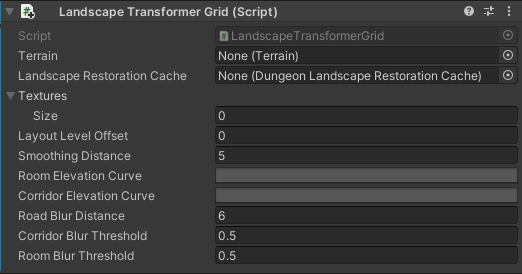
This script requires the terrain game object reference so it can modify it.
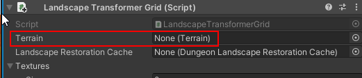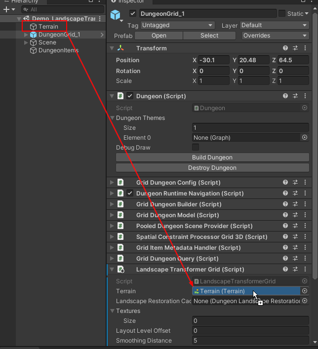
To support non-destructive landscape modification, Dungeon Architect needs to save the state of the landscape in the area where it modifies it, so that it can restore it later on (when the dungeon is destroyed or modified)
Create a landscape restoration cache asset
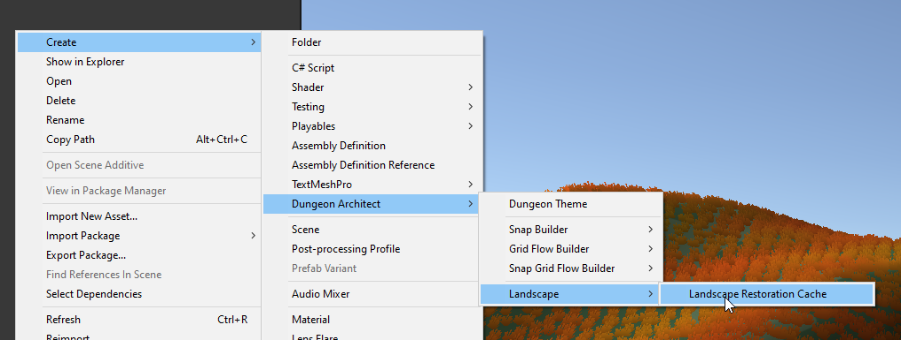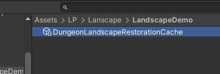
Assign this to the Lanscape Transformer script
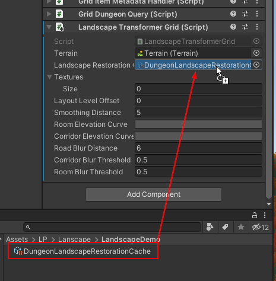
Assign the Elevation curves so we have a smooth transition from the existing terrain to the dungeon
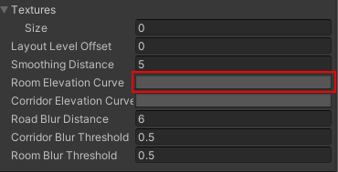
Click on blank area to open up the curve editor. Choose one of the values highlighted below
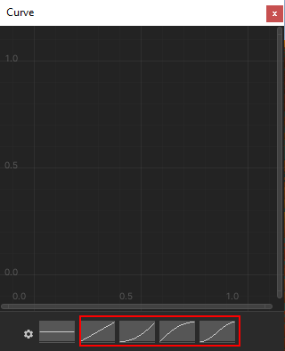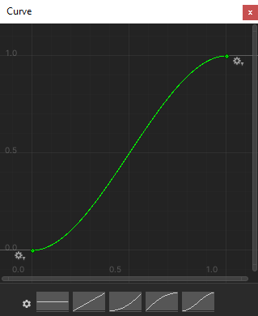
Close the curve editor
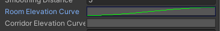
Do the same for Corridor Elevation Curves
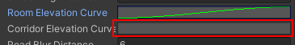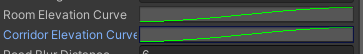
Build the dungeon
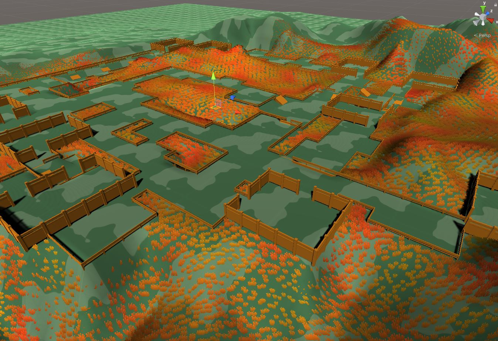
Destroy the dungeon to restore the terrain back
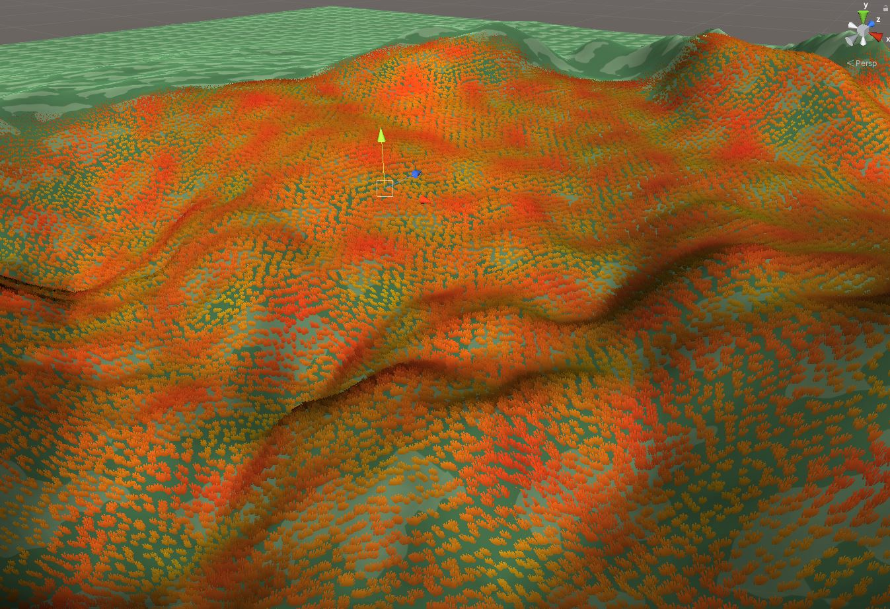
Setup Paint Support
You may paint your terrain around the rooms, corridor and cliffs by applying your existing terrain layers. Since you already have a terrain, you would have setup terrain layers to paint your terrain. If not, find more info about Terrain Layers here. We'll paint the rooms with a certain terrain layer
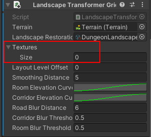
Create a new Texture entry and add an existing Terrain Layer